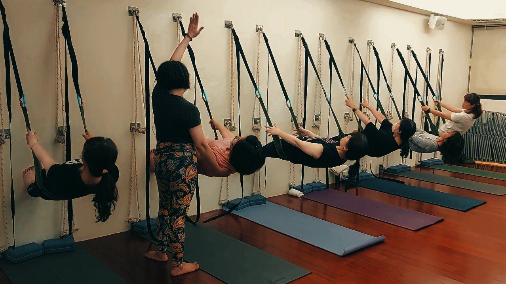

壁繩瑜伽是什麼？適合誰？認識壁繩的支撐與練習方式

壁繩瑜伽用固定在牆面的繩帶提供支點，讓肩胛、胸椎與骨盆在較少承重下練習出力。以分擔約 30%–50% 體重為例，實際比例隨姿勢與設定而變，並非固定值。初學可雙腳踩地，不需倒立。近期受傷、有疼痛或特殊病史，請先諮詢專業人員。
壁繩瑜伽是利用固定在牆面的繩帶，幫身體提供支撐、借力與定位的練習方式。它特別適合想更理解自己身體使用方式、覺得很緊很卡、或想在比較有支撐的狀態下開始練習的人；如果你更在意第一次上課流程、身體很硬能不能做，或壁繩和一般瑜伽怎麼選，這頁也會帶你找到對應的下一步。
先講結論：壁繩實際能幫你什麼
與其先講理論，不如先講壁繩在練習裡實際提供什麼幫助。很多人會在壁繩上更容易感覺到：
- 比較有支撐感：繩子分擔一部分重量，讓你不用一開始就靠硬撐完成動作。
- 比較容易找到身體位置：當支點更清楚時，肩胛、上背、骨盆等部位的參與感也更容易被看見。
- 比較能分辨哪裡在出力：不是一味追求幅度，而是慢慢練習哪些地方該放鬆、哪些地方該參與。
- 比較適合建立新的活動方式：對很緊、很卡、很容易代償的人來說，有支撐時通常更容易開始理解動作。
要老實說：壁繩不是保證結果的捷徑，而是一種幫你把支撐、位置感與出力方式練得更清楚的工具。對很多人來說，這正是它的價值。
壁繩到底是什麼？
壁繩，是固定在牆面上的一組繩帶。練習時，你把身體的一部分交給繩子，讓它替你「借力」和「支撐」。你不用先很強、很軟，繩子會分擔掉一部分重量與難度，讓你能專心去感覺「對的位置」。簡單說，它幫你做三件事：
- 分擔重量——繩帶可提供額外支點，讓你以較容易掌握的幅度練習。
- 找到對的位置——給你一個穩定的支點，讓你一下就感覺到「原來是這裡出力」。
- 調整承重——老師可依動作和狀態調整支撐，避免勉強拉到不舒服的角度。
一般瑜伽是「你去配合動作」，壁繩瑜伽是「動作來配合你」。
如果你已經試過很多方法，壁繩的角色是什麼？
很多人接觸壁繩之前，已經試過按摩、伸展、重訓或各種放鬆工具。這些方法不一定不好，只是處理的事情不完全一樣：有些偏舒緩當下緊繃感，有些偏活動度或肌力訓練；壁繩比較像是把支撐、位置感與出力練習放在同一個過程裡。
如果你想看更完整的比較，可以讀 按摩／放鬆工具和壁繩差在哪？。這裡先保留一個簡單理解：不同方法在身體上扮演的角色不同。
如果你現在就在比較「我需要的是舒緩、活動、訓練，還是更有支撐的練習方式」，那就很適合把壁繩放進選項裡一起看。
壁繩，怎麼提供支撐與練習空間？
壁繩的特色，是把「支撐」和「練習」放在同一個過程裡，讓你在安全、有支撐的狀態下，慢慢看懂自己怎麼用身體：
- 先鬆開過緊的：繩子撐住你、給你依靠，可以從胸口、髖前側覺得可控的幅度開始，邊練邊觀察呼吸。
- 再喚醒睡著的：透過穩定的支點借力，你能一下感覺到「原來菱形肌、臀肌是這樣出力的」，對照哪些部位先用力。
- 重建正確的肌肉分工：在適合的幅度內反覆練習，逐步辨認哪些地方可以少用力、哪些地方需要參與。
很多人第一次接觸壁繩，會比較容易感覺到「原來這裡才是我要找的位置」。如果你更在意實際上課的樣子、第一堂大概會做什麼，可以接著看 第一次上壁繩瑜伽會做什麼？新手上課前先看這些。

壁繩瑜伽 vs 一般瑜伽，差在哪？
可以先用一句話理解：一般瑜伽常常是你先去配合動作，壁繩則比較像先用支撐幫你找到位置，再慢慢學會出力。 這不是哪一種一定比較好，而是起點、需求與身體條件不同時，適合的練法也會不同。
如果你想看更完整的差異，可以讀 壁繩和一般瑜伽差在哪？。
| 比較維度 | 鑫彥壁繩瑜伽 | 一般地面拉筋／瑜伽 |
|---|---|---|
| 重力與承重 | 繩帶分擔部分重量，比例隨身體角度與支點調整。 | 重量主要由地面接觸點承接，也可用瑜伽磚等輔具調整。 |
| 動作支撐 | 牆面與繩帶提供支點，可從雙腳踩地、較小幅度開始。 | 靠地面或輔具建立支撐，動作難度可按程度調整。 |
| 胸廓與脊椎延展 | 借力練習胸椎伸展，觀察圓肩時能否減少聳肩、折腰等代償。 | 可透過呼吸、手臂位置或輔具調整，用較小幅度練習胸廓活動。 |
| 新手怎麼開始 | 適合想先有支撐的人，老師可依活動範圍安排動作。 | 可選新手班或基礎動作，逐步建立熟悉感。 |
在壁繩課上，繩帶怎麼提供支撐？
看一眼小團課的實際畫面。學員面向牆面、雙手握繩，屈膝後把部分重量交給繩帶。
面向牆面，屈膝握繩借力
展開影片文字摘錄
0–1.1 秒｜學員排在牆前，雙手握住各自的繩帶，屈膝讓身體略往後。繩帶作為借力支點。
身體很硬、沒基礎，也可以開始嗎？
可以先給你一個簡短答案：很多對壁繩有興趣的人，本來就不是柔軟、有基礎、很會運動的那一型。 對這類人來說，支撐感本身就是壁繩的價值之一，因為有依靠，比較有機會放慢速度、理解位置，而不是一開始就靠硬撐。
如果你最在意的是「我身體很硬可以做嗎？沒基礎會不會跟不上？」可以接著看 身體很硬也可以開始嗎？。
哪些身體狀態的人，可能會想進一步了解壁繩？
壁繩特別容易吸引這幾類人：久坐後總覺得肩頸一直硬撐、站不久就累、身體很緊卻抓不到該怎麼出力，或想在比較有支撐的狀態下重新認識自己的身體。老師在帶領時，通常也會先觀察你平常有哪些身體使用習慣，再決定先從哪裡開始。
- 肩膀總是往前掉的人：常會想知道，自己是不是前側太緊、後側太少參與。
- 頭容易往前送、肩頸一直硬撐的人：通常會更在意支撐感與出力方式，而不只是多拉幾下。
- 上背容易塌、站姿坐姿很快就累的人：往往會想了解身體怎麼在比較省力的狀態下站穩。
- 久坐後下背卡卡、身體整體很緊的人：通常需要先看清楚，是哪些地方太緊、哪些地方太少參與。
也因為每個人失衡的偏向不同，我們才會建議一開始先做一次體態檢測——先看清楚你是哪裡緊、哪裡弱，再決定先鬆哪裡、先練哪裡，而不是大家做一樣的。
第一次上壁繩，通常會怎麼開始？
在鑫彥，第一次接觸壁繩的人，通常不會一開始就追求難動作，而是先看你的狀況、理解哪裡需要支撐、哪裡需要慢慢找回感覺。如果你更想知道第一堂可能會做什麼、要穿什麼、帶什麼，可以接著看 第一次上壁繩瑜伽會做什麼？新手上課前先看這些。
想直接比較上課方式，可看 壁繩、一對一與小團課，或讀 第一次上課怎麼選。教室位於高雄市左營區新庄仔路 726 號 3 樓，交通與聯絡方式在這裡。
會不會很痛？
我們追求的是「有感，但舒服」，不是「越痛越有效」。在繩子的支撐下，你只要慢慢把緊的地方鬆開、把弱的地方叫醒，過程中老師會看著你的反應調整力道與幅度。真正的進步來自規律、剛剛好的刺激，而不是把自己弄痛——痛，反而會讓身體更緊、更防衛。
誰適合、誰要先問醫師
特別適合：久坐低頭、肩頸緊繃圓肩駝背的人；身體很硬、覺得「沒有瑜伽細胞」的初學者；試過重訓、伸展卻抓不到發力的人；想改善體態、怕受傷、想要有人盯著的人；中高齡想要低衝擊運動的人。
這些情況請先跟老師和醫師確認：近期開刀、骨折、急性受傷或發炎；懷孕或醫師特別叮嚀；嚴重骨質疏鬆、椎間盤問題等。老師會依你提供的狀況與專業人員的建議調整課程。體態檢測屬運動姿勢觀察。中高齡的注意事項，可參考 中高齡練壁繩，安全嗎？要注意什麼。
常見問題
壁繩瑜伽一定要很柔軟才適合嗎？
不一定。很多人接觸壁繩，反而正是因為身體很緊、很卡，想在比較有支撐的狀態下開始練習。若你想更深入看「身體很硬」這個問題，可延伸閱讀 身體很硬也可以開始嗎？。
壁繩和一般瑜伽要怎麼選？
重點不是哪個比較高級，而是你現在的身體狀態、起點與需求。若你想看更完整比較，可讀 壁繩和一般瑜伽差在哪？。
第一次接觸壁繩，會不會很複雜？
多數人一開始會先從較有支撐、較容易理解位置的方式開始，不是直接挑戰高難度動作。第一次上課流程與準備可看 第一次上壁繩瑜伽會做什麼？新手上課前先看這些。
如果我平常會用按摩或放鬆工具，還需要了解壁繩嗎？
可以把它們看成不同用途：有些方法偏舒緩當下感覺，有些偏支撐與出力練習。若你正在比較這些方法的差異，可讀 按摩／放鬆工具和壁繩差在哪？。
本頁為體態與姿勢的一般衛教與練習分享，非醫療診斷或治療。若有疼痛、舊傷或特殊病史，請先諮詢合格醫療專業人員。
雙腳站穩，背靠牆或站在牆邊。左手沿牆輕抬約 5 秒，放下後換右手約 5 秒。留意哪一邊比較早聳肩、憋氣或讓腰往前挺。只抬到舒服的高度，若疼痛、麻或暈就停下。左右差異可在上課時告訴老師，這個觀察無法用來診斷。
選一個起點，用 LINE 詢問壁繩體驗
老師您好，我想了解壁繩瑜伽（來源代碼：#about-wall-rope）。我的狀態：【筋骨很硬／零基礎】。想了解：【首次 NT$299 AI 體態檢測】。方便時段：【平日白天】。請幫我確認可約時段，謝謝！